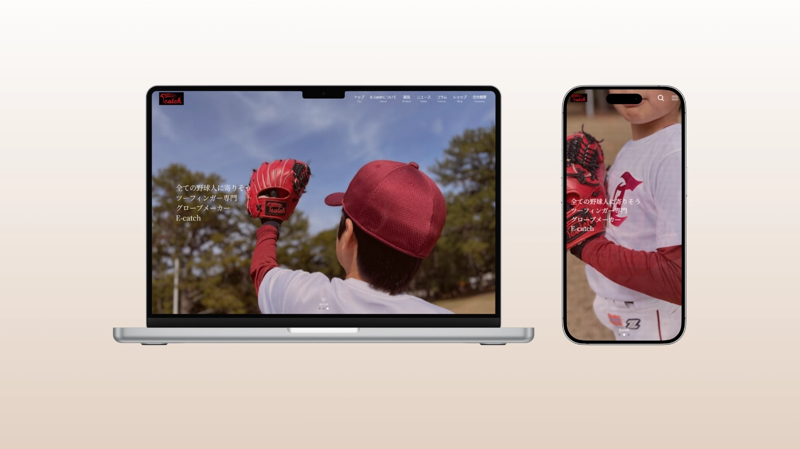
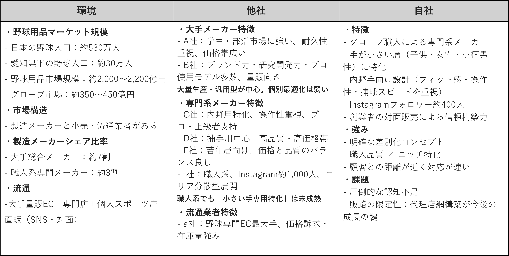
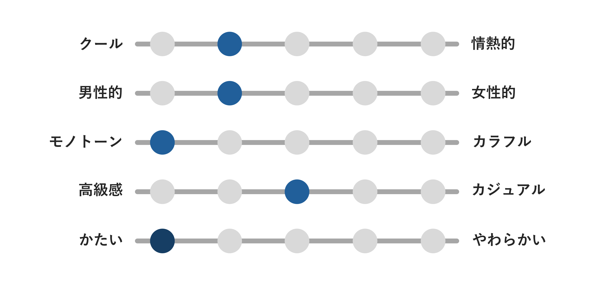
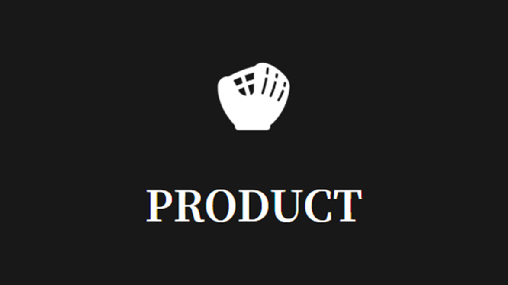
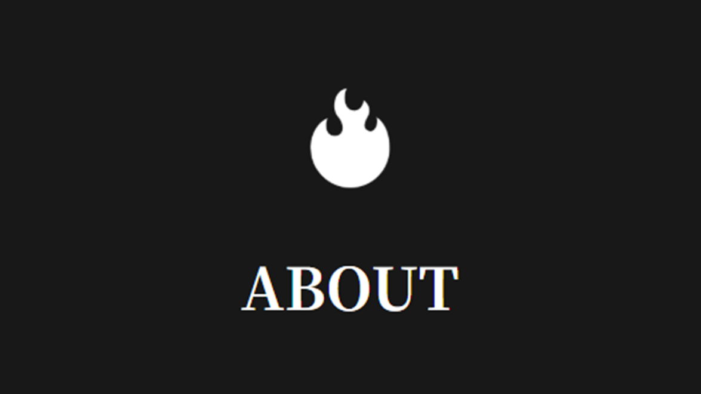
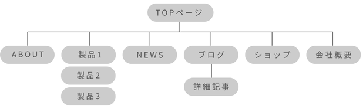

E-catch様 コーポレートサイト
Overview
野球グローブメーカー“E-catch”様のコーポレートサイト制作をしました。ざっくりとしたイメージからヒアリングにて要件定義を行い、一気通貫してサイト制作を行いました。
- URL：
- https://e-catch-glove.com/
- 担当業務：
- 要件定義、デザイン、使用技術選定、コーディング
- 制作時間：
- 20時間
- サイトの目的：
- 認知拡大・名刺代わりとなるコーポレートサイト作成
- デザインについて：
-
情報設計
3C分析にて環境・競合他社を調査しクライアントの特徴を整理、業界におけるクライアントのポジショニングをしました。

コンセプト決定
クライアントへのヒアリング・ブランドカラーから、サイトのイメージを決定。

メインカラーは黒(#000000)よりやや明るめの黒（#181818）を使用し、クライアントとすり合わせたイメージを損なわない程度に抜け感を出しました。
全体的にシンプルなデザインを希望していたため、単調な印象にならないようセクションごとにアイコンを使用することでアクセントにしました。


ワイヤーフレーム製作
名刺代わりとなるサイトとのことだったので、コンテンツマップを制作。
「代表者の生い立ち」や「創業の思い」から「商品ラインナップ」まで、コンテンツ構造を可視化しサイト全体の構成を把握することで、必要なコンテンツが漏れなく網羅されているかを俯瞰で確認。